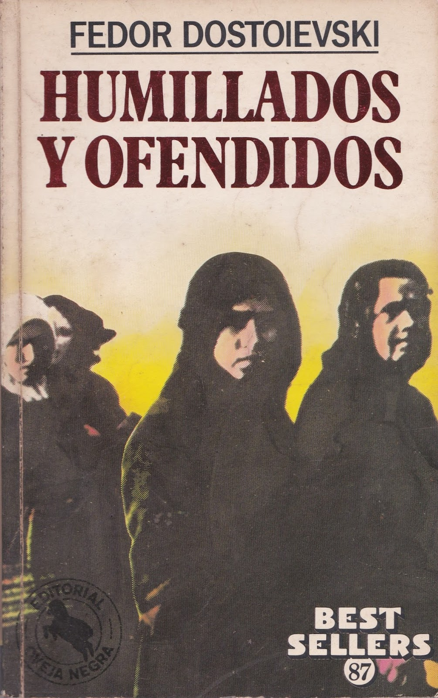
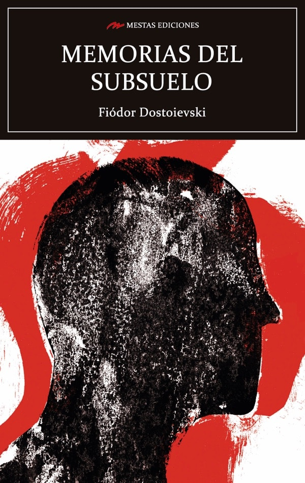
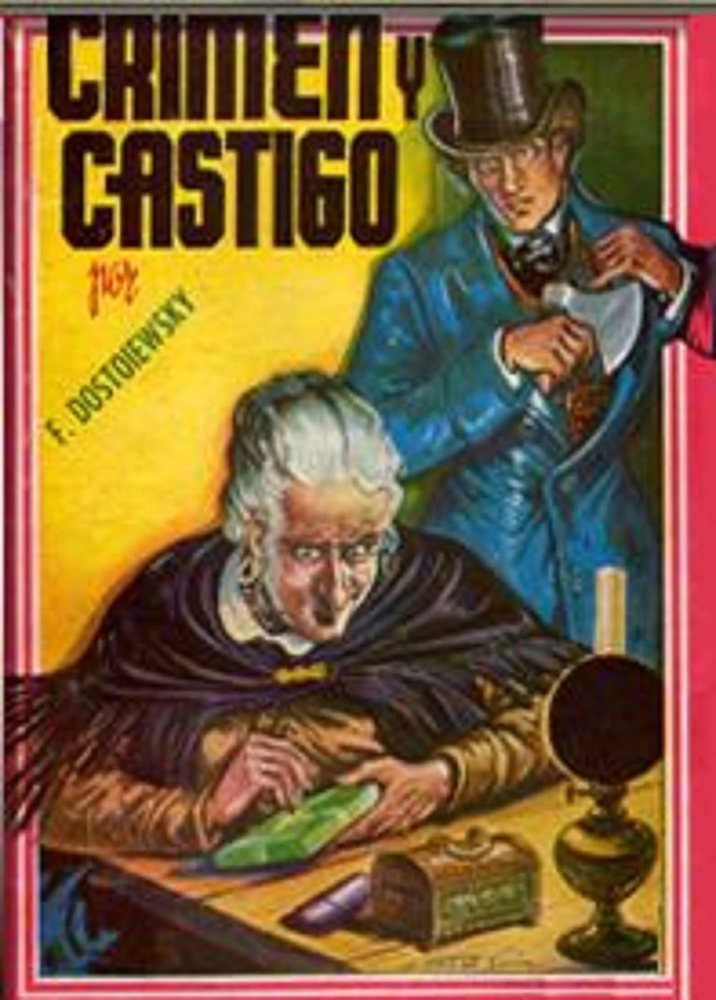
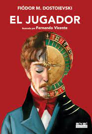
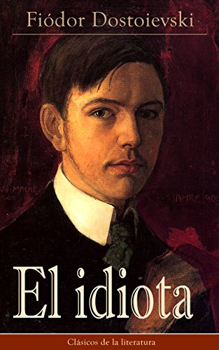
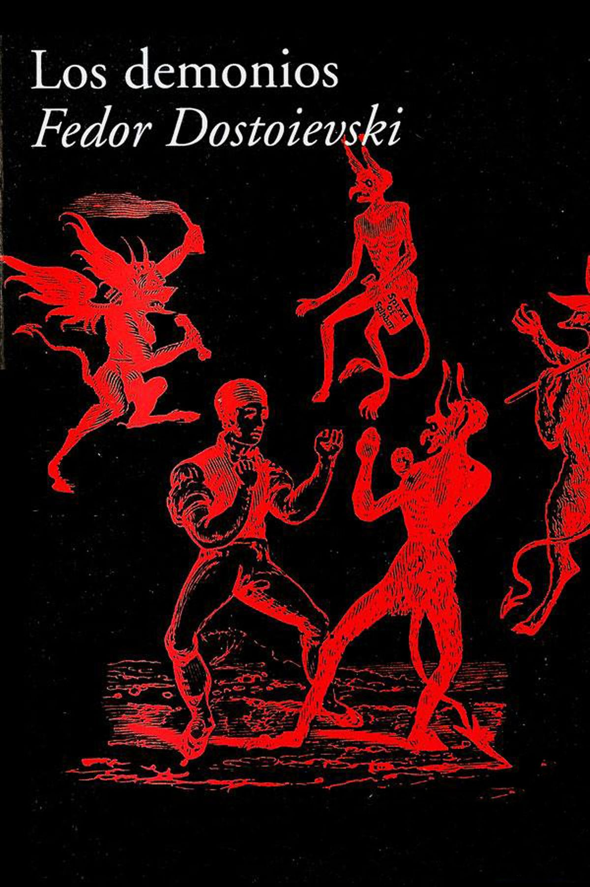
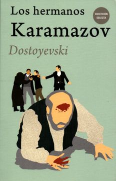

| Grandes Obras (en orden cronológico) | |||
|---|---|---|---|
| Año | Obra | Tomos disponibles | Sinopsis |
| 1846 | "Pobres gentes" |
10 | Novela escrita en forma epistolar narra la historia de personas tiernas y sencillas, sus protagonistas: un humilde funcionario Makar Diébushkin y una joven huérfana, Varvara Dobrosiélova. A lo largo de su correspondencia, reflejan su gran riqueza espiritual en contraste con su pobreza de bienes materiales. Toda la obra está saturada de un humorismo patético y enternecedor. Este relato, auténtico evangelio de los humildes, nos habla con penetrante emoción de los mendigos, de las familias miserables, de todo ese dolor que se resume en el título de la obra. |
| 1861 | "Humillados y ofendidos"  |
14 | El narrador de la novela es, como el propio Dostoievski, un escritor cuya primera obra le ha valido reconocimiento, pero que, poco amigo de la sociedad y de la adulación, parece incapaz de seguir su carrera. Está enfermo y ha aceptado, además, la pérdida del amor: Natasha, la joven a la que amaba, se ha fugado con Aliosha, hijo del príncipe Valkovski, contra la voluntad de los padres de ambos. El padre de Aliosha, un hombre maquiavélico y cruel, quiere casarlo con una rica heredera, y no permitirá que nadie arruine sus planes; el padre de Natasha, que, por ende, tiene un pleito con el príncipe, cree que su hija ha llevado el oprobio a su familia y la maldice. |
| 1864 | "Memorias del subsuelo"  |
8 | Protagonizada por un individuo anónimo del que sólo se sabe que es un mediocre funcionario, dividida en dos partes: la primera es un diálogo que el protagonista mantiene con el lector, sembrado de hondas y acertadas reflexiones, y a través del cual se logra conocer la personalidad desvalida del protagonista. En la segunda parte, el protagonista relata una vivencia que le acaeció en su juventud, en apariencia intrascendente, pero que marcó su vida y que representa con claridad meridiana la idea de la personalidad del protagonista, de la que el lector se ha podido hacer una idea en la primera parte. |
| 1866 | "Crimen y castigo"  |
23 | La novela narra la historia de Raskolnikov, un estudiante de San Petersburgo que planea un espeluznante crimen con la excusa de solucionar sus problemas económicos. Pero las consecuencias de la fechoría resultan ser insoportables para el frágil equilibrio mental de Raskolnikov, sumiéndolo en una crisis que destruirá su mundo, afectando a todos los que lo rodean. |
| "El jugador"  |
19 | Alekséi Ivánovich es el joven preceptor de la familia del general Zagorianski. Está enamorado de la hijastra de éste, lo que le lleva a actuar con una total falta de voluntad: se juega todo su dinero a la ruleta, pues cree que así logrará agradar a la joven. Pero la abuela de ésta también se jugará su fortuna en el casino y lo perderá todo, dejando a la familia entera en una grave situación económica. | |
| 1868 | "El idiota"  |
21 | Proveniente de un establecimiento de salud en Suiza donde un doctor le ha tratado una enfermedad no concretada, el joven príncipe Myshkin (persona esencialmente buena y sin ninguna malicia) regresa a Rusia sin un rublo con el fin de hallar cobijo o ayuda en algunos parientes lejanos. Su aparición e integración en la sociedad de San Petersburgo llevará, precisamente en razón de su carácter, a que todo aquel que entable relación con él, desnudado por su mirada ingenua, sus mansas palabras y sus actos inocentes, experimente un trastorno inesperado en su vida o en sus sentimientos. |
| 1871 | "Los demonios"  |
6 | Inspirada en el asesinato de un estudiante en manos de sus compañeros revolucionarios en 1869, y se concibió como una profunda crítica a los movimientos que estaban emergiendo en aquel momento. El resultado es una de las novelas más controvertidas, complejas y oscuras de Dostoievski desde que escribió Los hermanos Karamázov. Pyotr Verkhovensky y Nikolái Stavrogin son los líderes de una célula revolucionaria cuyo objetivo es derrocar el zar, destruir la sociedad y hacerse con el poder, pero cuando el grupo es descubierto e interviene la justicia, se pone a prueba nuestra propia fe en la humanidad. |
| 1879 | "Los hermanos Karamazov"  |
19 | Ultima obra y síntesis monumental de su pensamiento y de su arte, desarrolla su íntimo convencimiento de la necesidad de un cambio radical en los destinos sociales y morales de la humanidad. El autor plasma un trágico cuadro de la sociedad de su tiempo y denuncia la corrupción engendrada por el poder del dinero, las pasiones incontroladas, el egoísmo y la ignominia espiritual. |